The Redmen TV 15th Anniversary Campaign
A RACE framework strategy for digital growth and fan loyalty, developed through audience analysis, competitor review, campaign mechanics, cost-benefit thinking, and implementation planning.
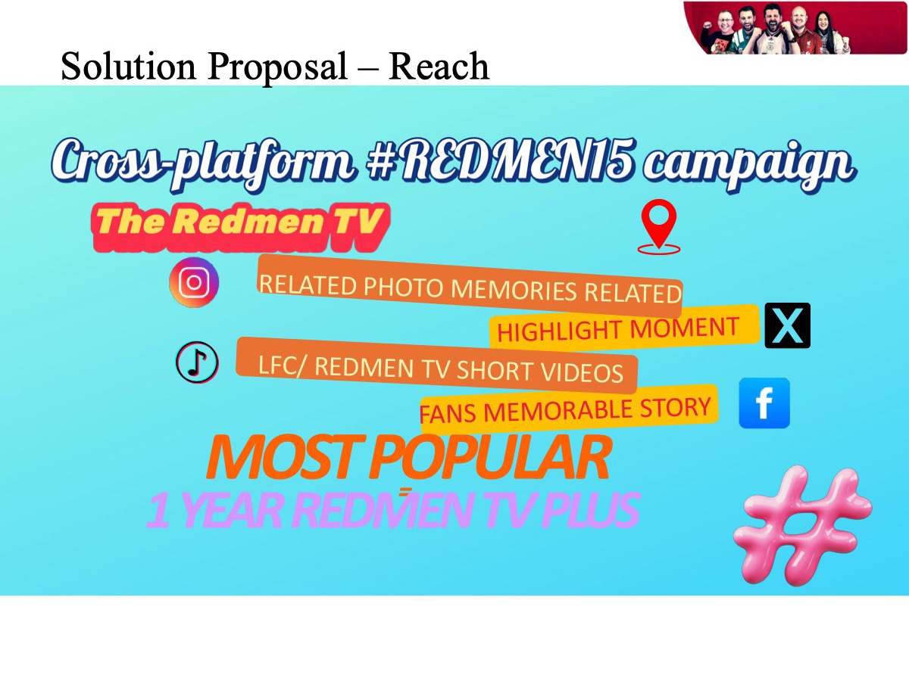
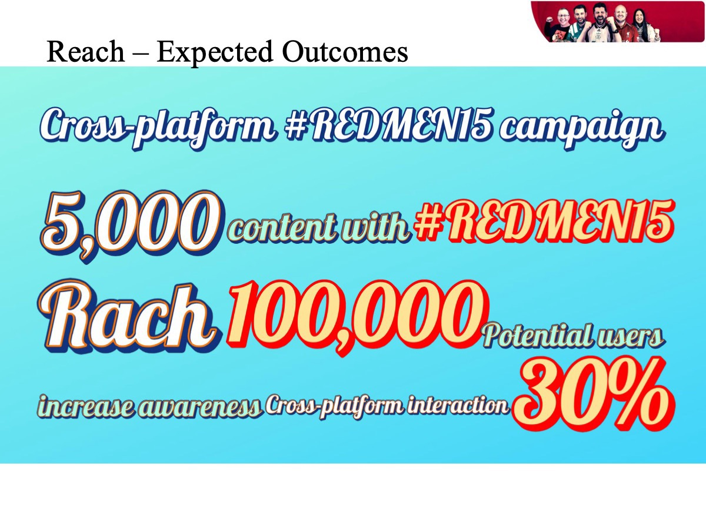
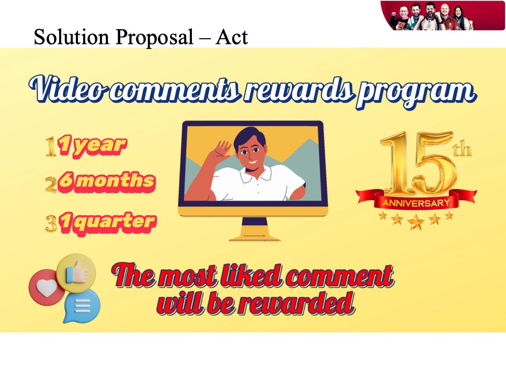
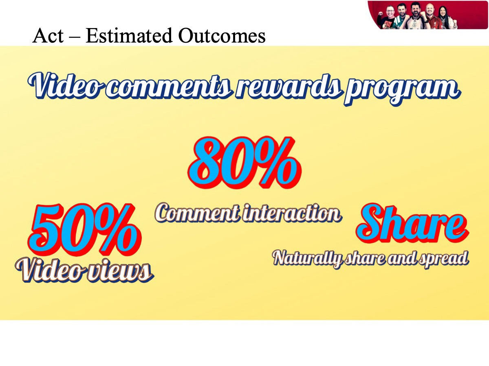
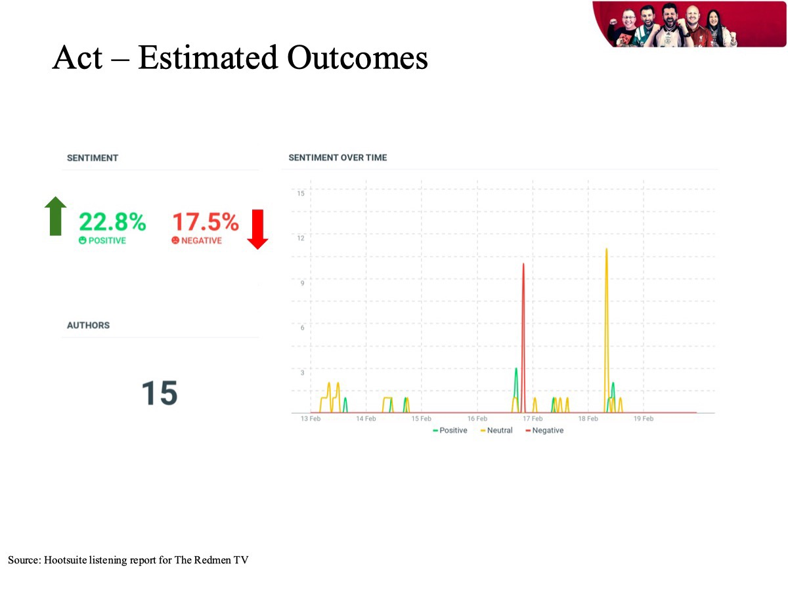
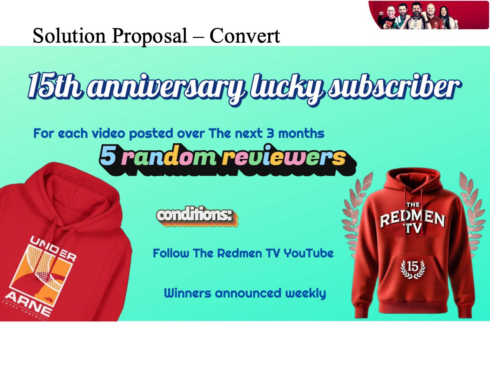
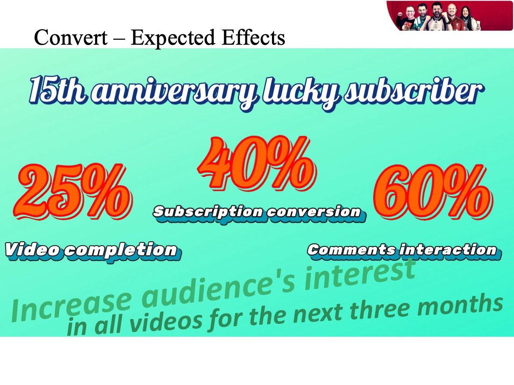
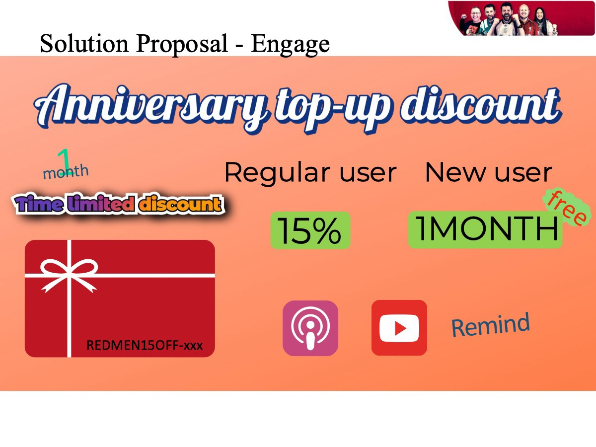
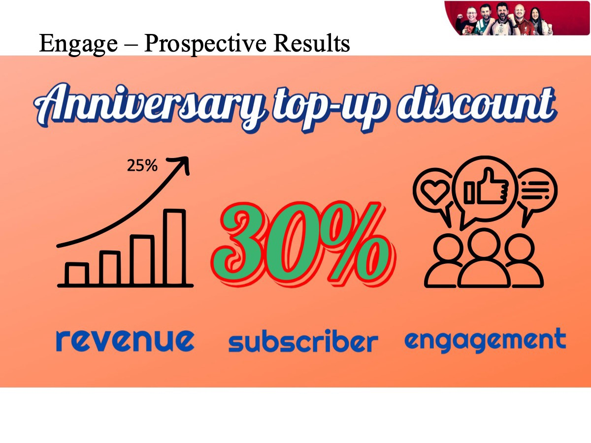
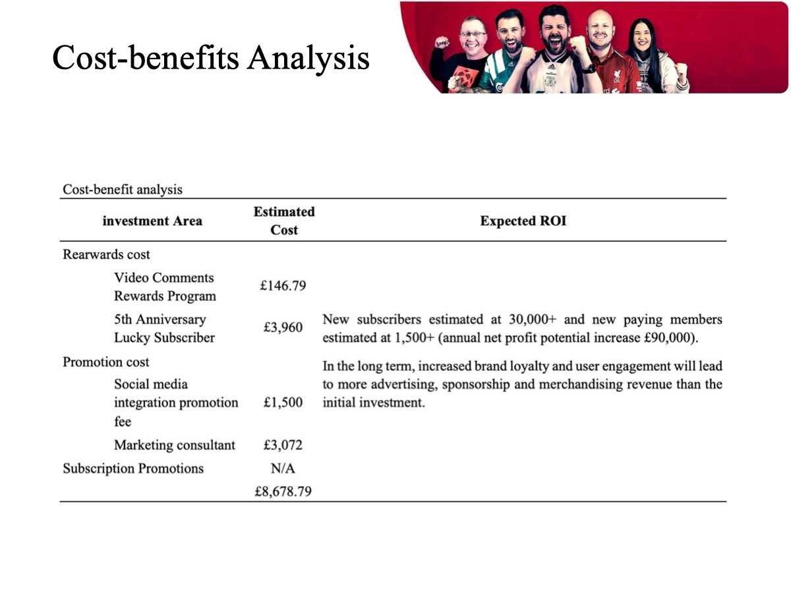
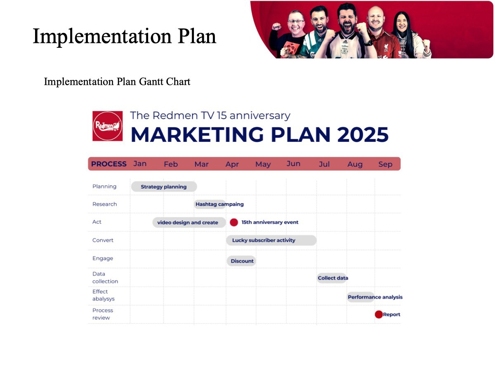
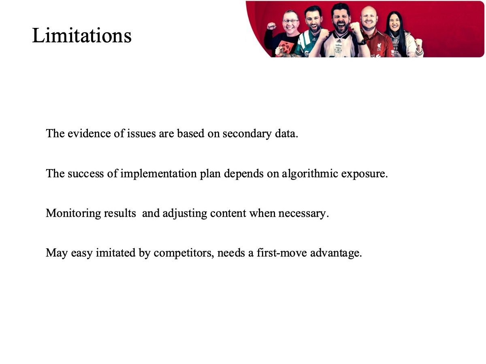
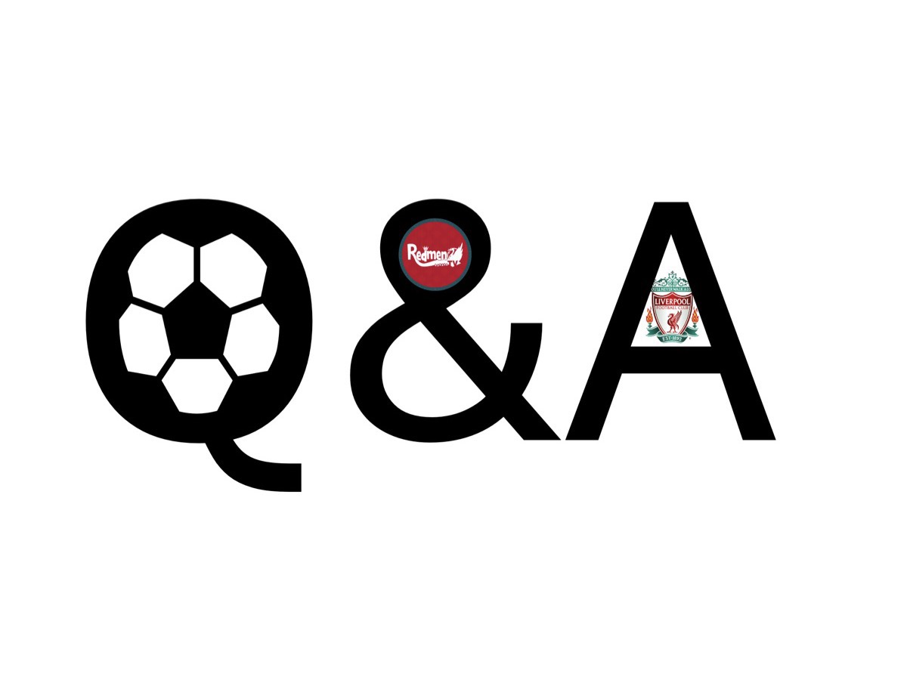